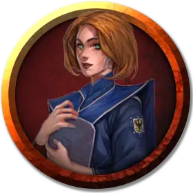

Студент консерватории
Conservatory Student
Средний Гуманоид (Любая раса)

Класс Доспеха 11
Хиты 4 (1к8)
Скорость 30 футов
| мод | спас | ||
|---|---|---|---|
| СИЛ | 11 | +0 | +0 |
| ЛОВ | 12 | +1 | +1 |
| ТЕЛ | 11 | +0 | +0 |
| мод | спас | ||
|---|---|---|---|
| ИНТ | 12 | +1 | +1 |
| МДР | 14 | +2 | +2 |
| ХАР | 16 | +3 | +3 |
Навыки Выступление +7
Чувства пассивное Восприятие 12
Языки Любой 2
Опасность 1/8 (25 опыта)
Бонус мастерства +2